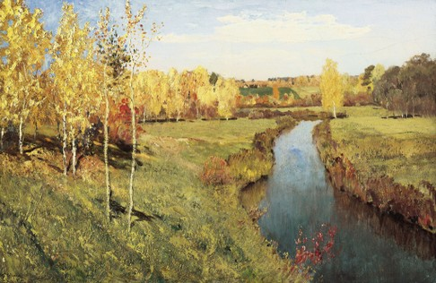
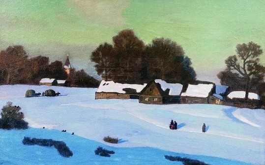
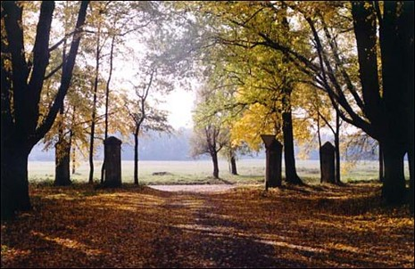
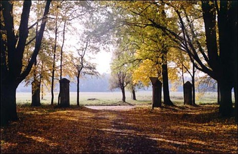

Какой у природы характер? - Мир природы в искусстве

Главное меню:
Октябрь. Осенняя песнь
Осень, осыпается
весь наш бедный сад,
Листья пожелтевшие
по ветру летят...
А.К. Толстой
Художественное описание картин
1. 
Исаак Левитан "Золотая осень"
Глядя на картину Левитана "Золотая осень", вспоминаешь и музыку русских композиторов, и лучшие строки русской поэзии об осени. "Очей очарование", "в багрец и золото одетые леса" - эти слова Пушкина очень подходят к "Золотой осени". На полотне мы видим характерный русский пейзаж. Спокойный день в середине осени. Солнце светит, но уже не так ярко. Перед глазами открывается русский простор: поля, рощи, река. Синее с белыми облачками небо на горизонте сходится с линией леса. Узкая речка с невысокими берегами пересекает картину вертикально, помогая глазу зрителя увидеть перспективу. Четкими вертикальными мазками художник показывает движение воды. Перед нами березовая рощица. Береза - очень живописное дерево. Левитан, как и многие художники, любил березы, часто изображал их в своих пейзажах. Осень уже окрасила природу в свои осенние цвета: желтый, золотистый оранжевый. Они такие яркие, что сначала кажется: вся картина написана разными тонами желтого цвета. Но это лишь на первый взгляд. Присмотревшись, мы видим, что и трава на переднем плане еще зеленая, только начала желтеть. И дальнее поле, за которым виднеется несколько деревенских домов, еще зеленое. И рощица на правом берегу еще бодро зеленеет. Но наше внимание приковано именно к желтым березкам. Их листва трепещет на ветру, переливается как золото в солнечном свете. В пейзаже нет грусти, наоборот, настроение умиротворенное, спокойное. Это золотая осень. Она очаровывает красотой.
2. 
"Зимний вечер" Крымов Н. П.
Когда мы смотрим на картину Крымова « Зимний вечер», у нас создается хорошее, приятное настроение, хочется долго смотреть на эту картину, от нее веет тишиной и спокойствием. Глядя на картину, у зрителя возникает чувство умиротворения, спокойствия и тепла, несмотря на то, что автор изобразил зиму. Художнику удалось передать красоту зимнего вечера. Мы смотрим на картину и как бы ощущаем мягкий сыпучий снег, освещенный лучами заходящего солнца, тишину предвечернего часа, как бы слышим скрип полозьев; саней, нагруженных сеном. С первого взгляда нас привлекает в картине глубокий снег с лилово-голубыми тенями, освещенный лучами заходящего солнца. Светлая полоса голубоватого снега оттеняет небо и подчеркивает затемненный передний план. Это прежде всего длинные предвечерние тени. О наступающем вечере свидетельствует также цвет снега, синеватый с фиолетовым оттенком. В композиции картины есть особенность. Картина построена по диагонали: надвигающаяся тень, тропинки устремляются вверх, к домам с высокими деревьями, в центр картины. Люди, идущие по тропинке, лошади, везущие воз с сеном, создают впечатление движения, наполняют картину жизнью, указывают на связь человека с природой. Мы можем предположить, что картина писалась художником с противоположного берега. В этот момент он находился на возвышенности на большом расстоянии от деревни: это подчеркнуто маленьким размером изображенных лошадей, неясными маленькими фигурками людей, домами и строениями, в которых не видно деталей. Деревья выступают общей массой.. Небо зеленовато-серое, местами розовато-лиловое. Такой цвет неба художник изобразил потому, что голубое небо в сочетании с желтыми лучами солнца, освещающими его, приобретает зеленоватый оттенок. Справа видна могучая сосна с искривленными ветками и пышной кроной. Слева - густой лиственный лес, а в центре картины – высокие куполообразные деревья. Деревья окрашены в рыжевато-коричневый цвет, который они приобретают от лучей заходящего солнца. В деревне бревенчатые строения, освещенные окна домов, церквушка, сарай. Художник мог услышать глубокую тишину, нарушаемую лишь легким поскрипыванием снега под шагами идущих, тонким повизгиванием полозьев саней; негромкое пение птиц, приглушенные удары колокола... Художник использовал в основном холодные цвета: голубой, серовато-голубой, серебристо-синий цвет снега, зеленовато-серый цвет неба, которые передают ощущение морозного вечера. Но употребил и теплые цвета: рыжевато-коричневые деревья; желтовато-коричневые стены домов и сараев; желтоватый отблеск окон, освещенных солнцем. Эти цвета передают ощущение уюта, спокойствия, тепла. Главное чувство, которое живописец хотел вызвать у зрителя, это чувство покоя и умиротворения. «Удивительное рядом!» — такой эпиграф можно подобрать к картине Н.П.Крымова. Художник любуется вечерними сумерками. Он хочет показать, как же прекрасна наша русская природа!
Хочется побывать в этом прекрасном уголке русской природы, насладиться тишиной сельской жизни в предвечерний час, подышать свежим морозным воздухом.
Выполните рисунок "Осень в моём городе(посёлке)". Передайте настроение осенней природы.
 
Подберите как можно больше слов-эпитетов, характеризующих настроение и характер весны, лета, осени, зимы.
| Лето | Осень | Зима | Весна |
Бабье, горячее, грозовое, дождевое, дождливое, душистое, душное, жаркое, жгучее, засушливое, знойное, золотое, прохладное, солнечное, сухое, сырое, теплое, удушливо-знойное, холодное, ясное, быстрое, длинное, запоздалое, короткое, позднее, раннее, богатое, зеленое, обильное, урожайное, щедрое. | Багряная, безлиственная, ветренная, влажная, грязная, дождливая, желтая, золотая, мокрая, морозная, нарядная, ненастная, пламенная, пышная, сухая, сырая, темная, теплая, холодная, хрустальная, глубокая, запоздалая,ранняя,нежная, печальная, прекрасная, суровая, тоскливая, угрюмая, хмурая, чудесная. | Белая, белоснежная, бесснежная, вихревая, влажная, вьюжная, крепкая, лютая, малоснежная, метелистая, многоснежная, морозная, мягкая, ровная, северная, снежная, студеная, суровая, сухая, сырая, теплая, туманная, умеренная, холодная, бесконечная, запоздалая, затяжная, поздняя, продолжительная, ранняя, голодная, белокурая, звонкая. | Влажная, дождливая, зеленая, лучезарная, ненастная, непостоянная, прохладная, роскошная, солнечная, сухая, теплая, травянистая, туманная, холодная, цветущая, яркая, буйная, молодая, поздняя, поющая, ранняя, тихая, торопливая, юная, веселая, волнующая, волшебная, живительная, праздничная, прекрасная, тревожная, чарующая, чудесная. |